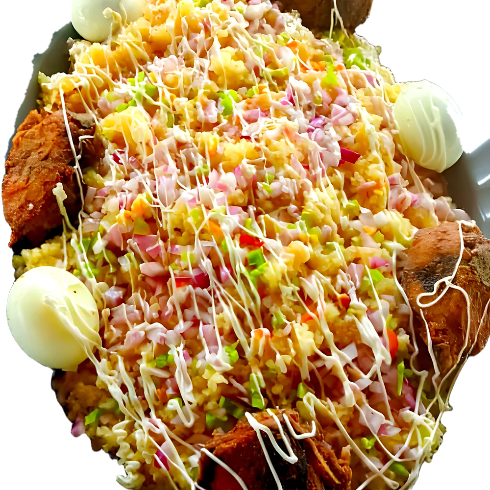
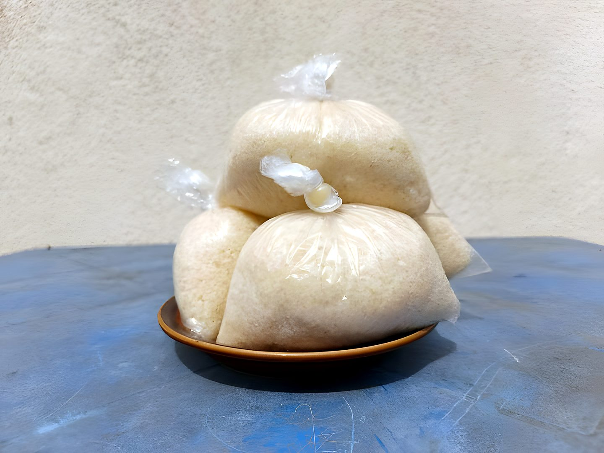
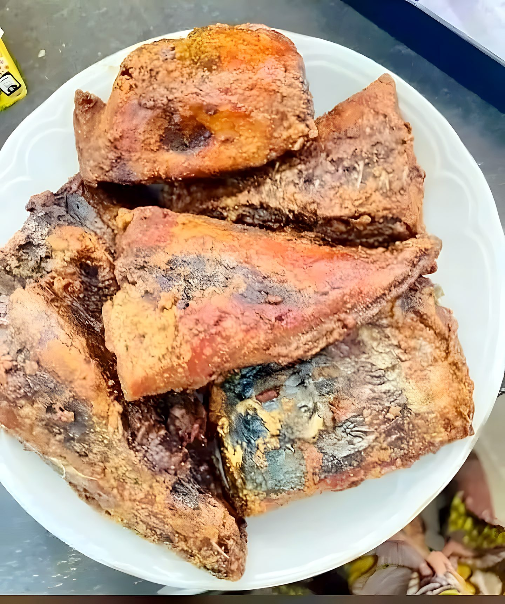
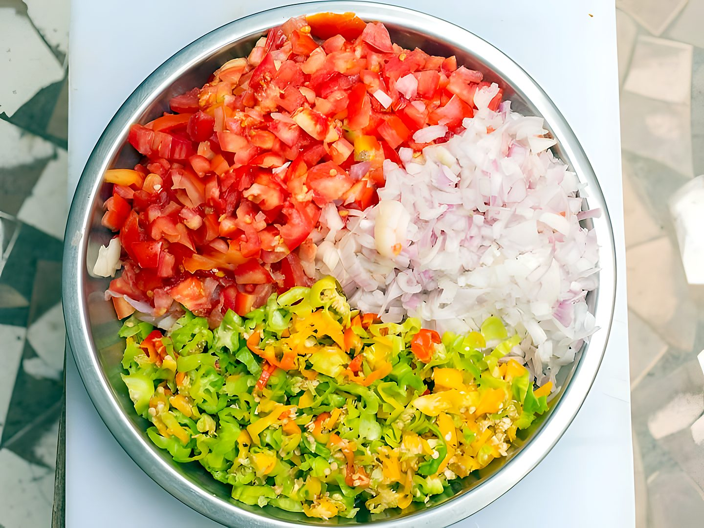
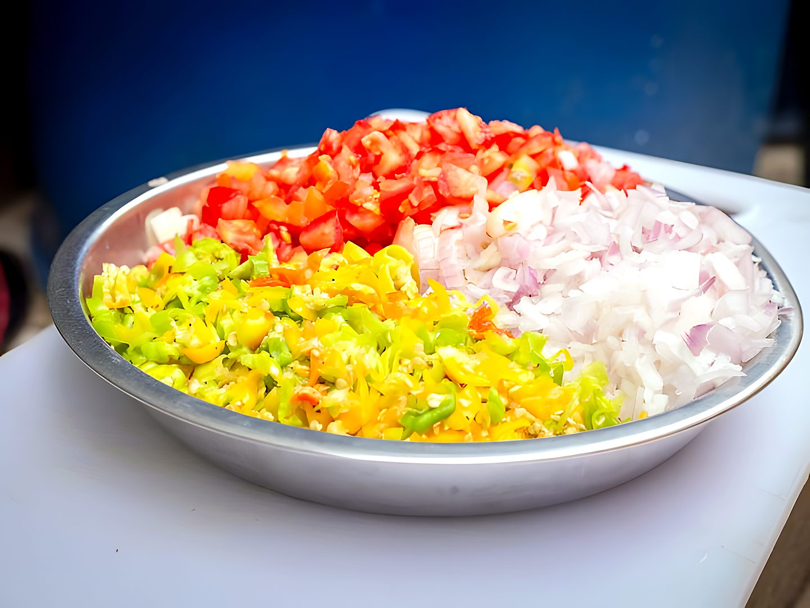
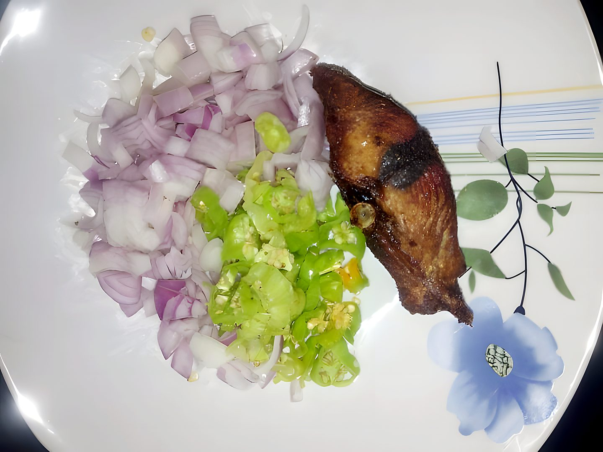
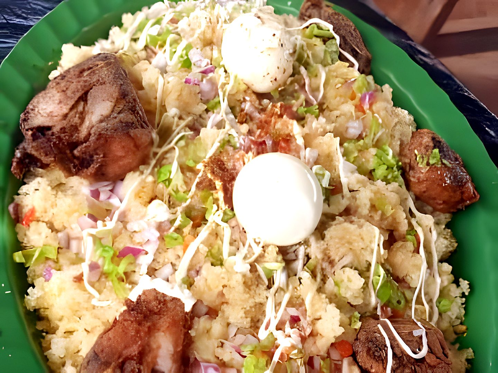

un bon garba, en six étapes
Comment on le prépare

-
Étape 1
L’attiéké
La semoule de manioc, servie tiède et légère. C’est la base de tout.

-
Étape 2
Le poisson frit
Du thon frit, croustillant dehors et fondant dedans.

-
Étape 3
Le piment
Frais et haché, il donne au garba son caractère. À doser selon votre courage.

-
Étape 4
L’oignon et la tomate
Coupés à la minute, pour le croquant et la fraîcheur.

-
Étape 5
L’assaisonnement
Un filet d’huile de friture bien chaude et une pincée de sel : tout le secret du goût.

-
Étape 6
Servi chaud
Tout se rejoint dans l’assiette. Il ne reste plus qu’à manger.

Où nous trouver
Quartier Municipal, après la Maison Blanche, non loin de la grande école Le Campus, Bouaké.
- Horaires
- à confirmer
- Le plat
- prix à confirmer
- Téléphone
- 05 76 54 88 68
Une envie de garba ? On vous le prépare.
ou appeler le 05 76 54 88 68